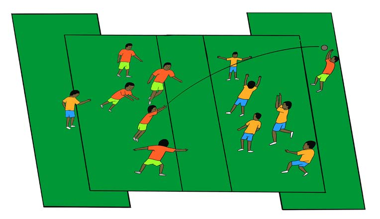

- 3. Form two teams of six players each;
- 4. Five players will stay inside the defending zone, and one will play behind the opposing team in the search zone;
- 5. Team members are not allowed to enter the free zone and search zone. Only the searcher is allowed to stay in the search zone outside the team’s zone;
- 6. Each team will pass the ball with hands to find a space to pass it to their searcher to score points;
- 7. Each team has the responsibility to prevent the opposing team from passing the ball through their zone; and
- 8. If the searcher catches the ball, they will return to the team, and the one who passed the ball through will become the searcher

The winning team is the one that all players have become searchers.